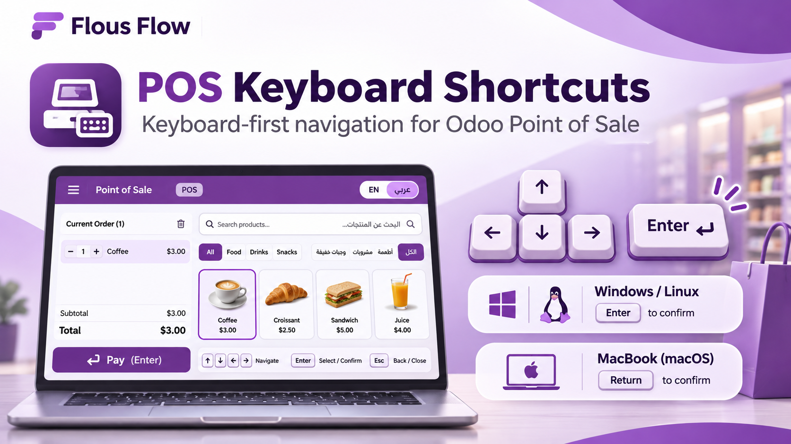
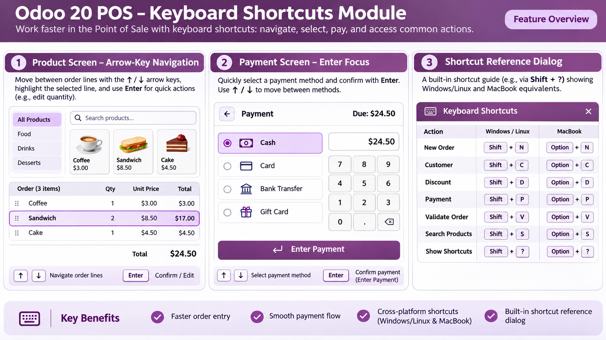
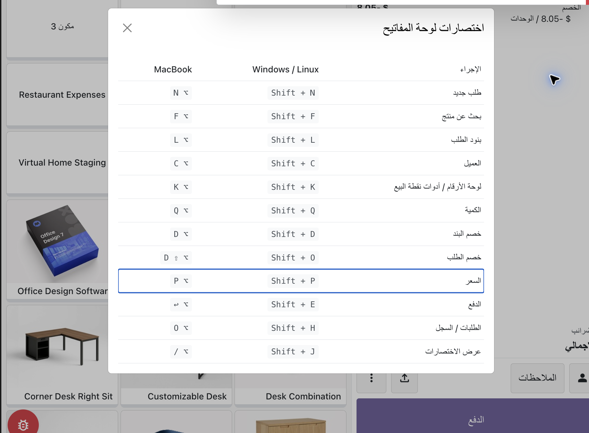
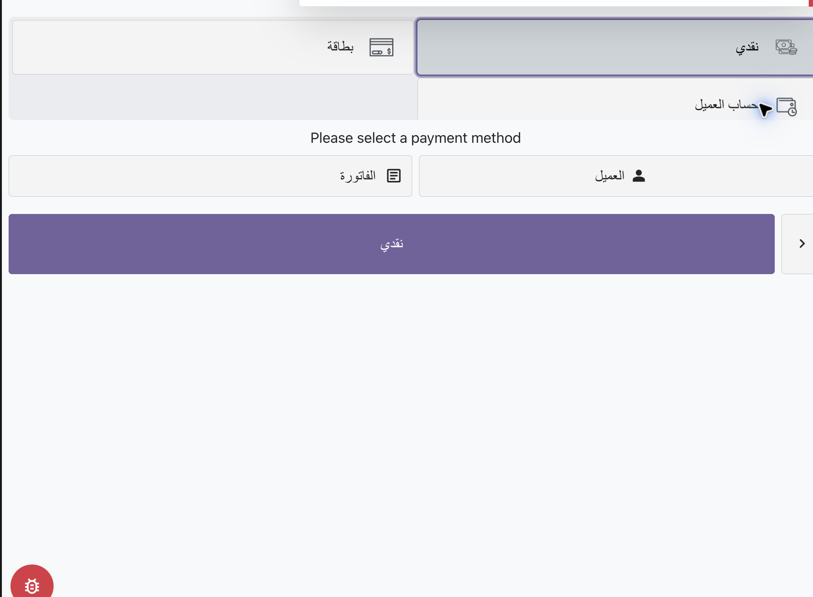

Keyboard-first navigation for Odoo 20 Point of Sale. The module keeps Odoo's native POS workflow and adds safe, configurable shortcuts for Windows/Linux and MacBook keyboards.




| Action | Windows / Linux | MacBook |
|---|---|---|
| New order | Shift + N | Option + N |
| Product search | Shift + F | Option + F |
| Order lines | Shift + L | Option + L |
| Customer | Shift + C | Option + C |
| Numpad / POS controls | Shift + K | Option + K |
| Payment | Shift + E | Option + Enter |
| Show shortcuts | Shift + J | Option + / |
The module does not patch Odoo core or replace barcode scanning, offline order storage, payment processing, access rights, taxes, refunds or session accounting. It delegates actions to the standard POS screens and store. Shortcuts are scoped to the active POS tab and can be disabled globally.
Odoo 20 Community. Requires Point of Sale. Licensed under LGPL-3.